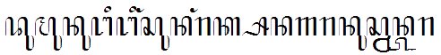

Nahh.. kalian pasti penasaran seperti apa sih UDINUS ??
Biar gak penasaran lagi langsung aja aku kasih info seputar UDINUS nihh...
The top priority university to be chosen in education and entrepreneurship.
Conducting high quality university
Growing and developing creativity and innovation of civitas academica that well contributes to society, government, and business sector.
For A Better Future
Dumununging Ingsun Angrakso Nagoro Nuswantoro

Nahh itu tadi sedikit info seputar UDINUS teman-teman....
UDINUS juga punya websitenya sendiri lho...
jika teman-teman mau melihat website UDINUS bisa klik tulisan ini
jika mau kembali ke halaman biodata bisa klik kembali